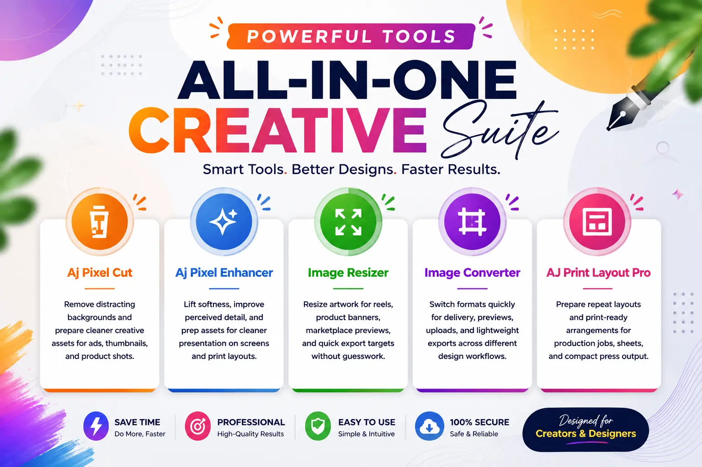

01
AI Background Isolator
Aj Pixel Cut
Cleanly isolate subjects, soften edge halos, overlay typography, and generate high-impact product cutouts for social or print.
Cut distractions, upscale assets, calculate print impositions, convert formats, and harmonize palettes in a unified high-performance workspace.

Cleanly isolate subjects, soften edge halos, overlay typography, and generate high-impact product cutouts for social or print.
Restore soft assets, boost pixel density, and clean up compression artifacts for sharp, client-ready previews and large formats.
Visiting cards, ID cards, certificates, stickers, labels, and flyers with 25-up sheet repeats, automatic crop marks, and bleed margins.
Batch convert image files across modern web and print formats including JPG, PNG, WEBP, AVIF, TIFF, BMP, and SVG.
Scale creatives instantly for Instagram, YouTube, visiting cards, or custom pixel dimensions with aspect ratio lock and live preview.
Translate color codes between HEX, RGB, HSL, and CMYK, check WCAG accessibility contrast, and generate harmonic palettes.